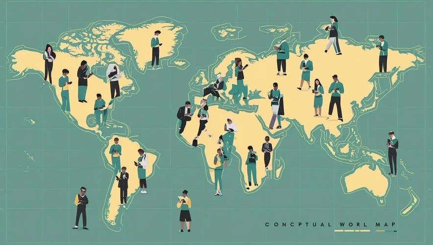

2026
Cyber Protection Act
Speech, online content and cybercrime

Tech Global Institute
A roadmap for rights-respecting digital governance in Bangladesh — the laws that shape your privacy, speech, and safety online, made clear and navigable.
Compare the overall rights assessments. Each rating opens that law’s full analysis; the situations below explain specific everyday consequences.
| Law | Freedom of expression | Civic participation & democratic process | Privacy & data protection |
|---|---|---|---|
| Personal Data Protection Act2026 | No risk | No risk | Positive impact |
| National Data Management Act2026 | Medium risk | No risk | Medium risk |
| Cyber Protection Act2026 | Medium risk | High risk | Medium risk |
| Bangladesh Telecommunication Act2001 | High risk | High risk | High risk |
| Penal Code1860 | High risk | Medium risk | No risk |
| Pornography Control Act2012 | High risk | No risk | No risk |
The classifications are indicative rather than exhaustive and should not be interpreted as definitive assessments of the current human rights impact of the legislation.
How to read this assessmentOpen a situation to see what can happen, where protection falls short, and which provisions to read next.
A complaint, an arrest and a conviction are different stages. The law matters at each one.
Understand this situationUnder the Cyber Protection Act, section 25 allows arrest without a warrant; section 26 does not. Both are bailable. Separately, the Penal Code retains speech offences that can reach online criticism and political discussion. The particular allegation determines which rules apply.
Having data rights and controlling every use of your data are not the same thing.
Understand this situationThe Personal Data Protection Act recognises rights such as correction and deletion, alongside grounds for processing without consent. A separate law connects foundational government databases. Read the first to understand your control over data use, and the second to understand what connecting your records makes possible.
No subscription fee does not mean there is no exchange of value.
Understand this situationPlatforms can earn from your data and attention. Consumer law’s payment-based definitions may leave that relationship outside effective protection. Competition law asks a different question: whether platform power, restrictive terms or limits on switching undermine choice and fair competition.
Who ordered removal, and when does a tribunal review it?
Understand this situationThe Cyber Protection Act allows executive-led removal before tribunal approval, which must follow within three days. Restoration is required if approval is not obtained, but the process for challenging removal is unclear. We propose a notice-and-action framework with reasons, appeals and safeguards for users.
Some powers connect. Others overlap. These two guides explain why the laws need to be read together.
Looking for a particular statute? Open its full guide: everyday consequences, legal provisions, our analysis and proposed reforms.
Speech, online content and cybercrime
Telecom, internet services and interception
Speech offences and criminal defamation
Sexual content, possession and distribution
Personal data, consent and accountability
Public databases and data governance
Markets, platforms and dominant businesses
Consumers, online shopping and services
A non-exhaustive selection of our key recommendations.
Reform surveillance/interception & disclosure; enact an investigatory-powers law
New online-safety law; decriminalise non-harmful speech; stricter on CSAM/TFSV
Balanced cybersecurity framework with diverse, independent governance
Modernise competition & consumer protection; a separate e-commerce law
Clarify how and when the Personal Data Protection Act takes effect
Sentencing guidelines + a centralised case-tracking system